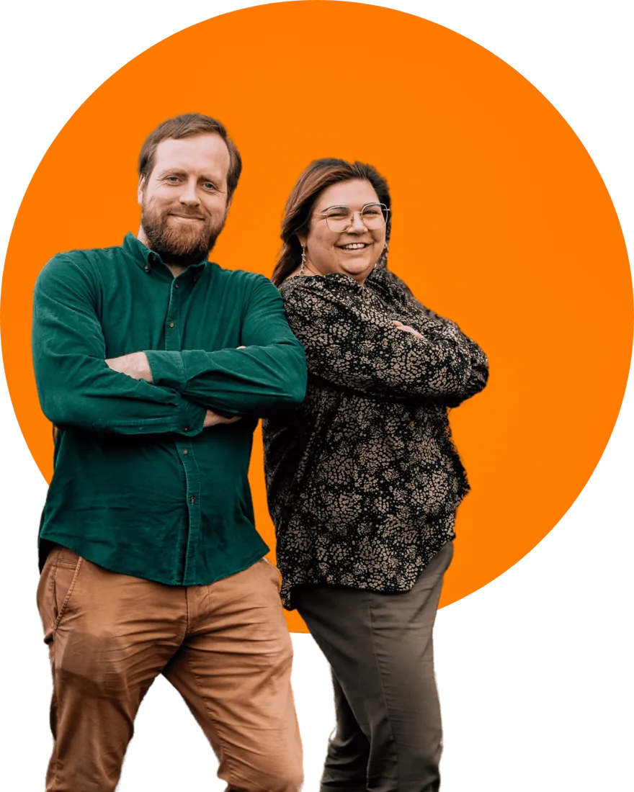
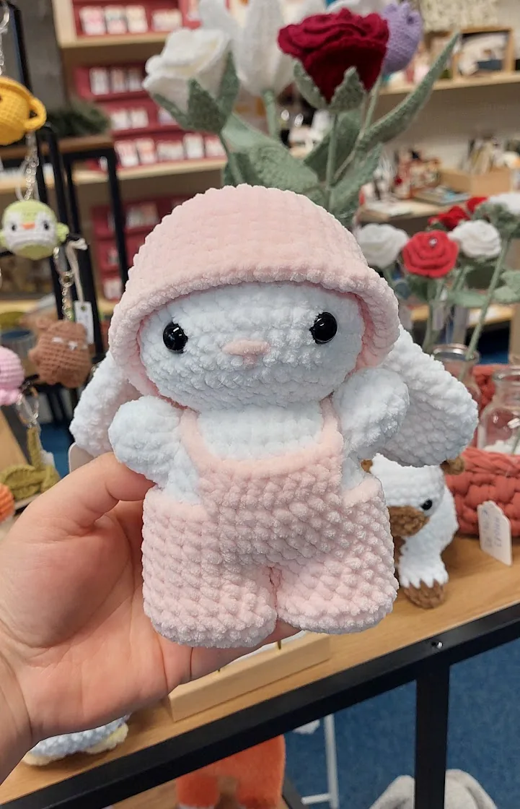
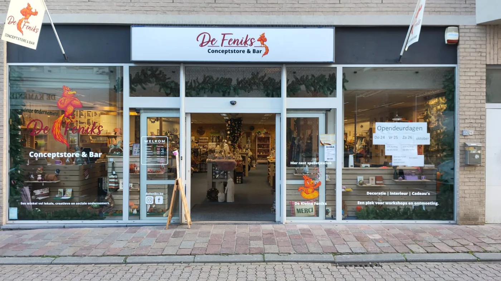
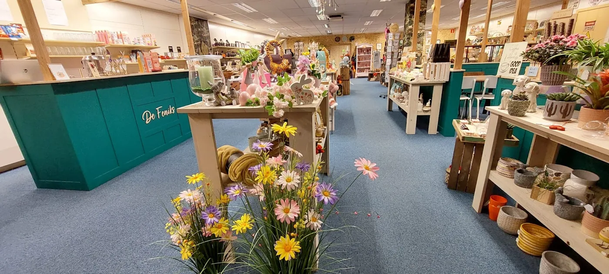

Nieuw in de winkel
Nieuw in de winkelMacramé van Rowena
Plantenhangers in verschillende kleuren en boekenleggers voor echte boekenwurmen.
Wenskaarten, juwelen, keramiek, gehaakte knuffels en chocolade, allemaal met de hand gemaakt door lokale, creatieve en sociale makers. Zoek je een cadeau? We helpen je graag. Wil je even blijven? Dan zetten we koffie.

Alles wat hier staat, werd met de hand gemaakt. Je koopt dus niet zomaar een cadeau: je steunt er meteen een maker mee.
Nieuw in de winkelPlantenhangers in verschillende kleuren en boekenleggers voor echte boekenwurmen.
 Wenskaarten
WenskaartenGetekend door illustratoren uit de streek. Er zit altijd eentje tussen voor wie je in gedachten hebt.

GehaaktSteek voor steek gemaakt, en elk net een beetje anders.
 Juwelen
JuwelenZilver en edelstenen van makers als Mi Mariposa en Studio Finne.
We hebben altijd plaats voor kleine, lokale makers in onze winkel.
Twijfel je wat kiezen? Een cadeaubon kan altijd. En veel geschenkjes laten we graag voor je personaliseren.
Achteraan in de winkel staat onze bar. Je drinkt er iets, eet een taartje of speelt een spelletje met vrienden. En in diezelfde bar lopen ook onze workshops.


We wonen al enkele jaren in Tielt en vonden dat er hier veel meer te beleven valt dan mensen denken. Daarom openden we De Feniks: een plek waar kleine makers hun werk kwijt kunnen, en waar jij binnenloopt voor een cadeau en blijft hangen voor een babbel.
Pieterjan en FebeWord lid van onze fanclubMet de fanclubkaart krijg je 10% korting op al je aankopen.
Ik wil een kaartEen winkel waar je je meteen welkom voelt: dat lezen we het vaakst. Hier zijn er drie, letterlijk van Google.
★★★★★“Wat een toffe en veelzijdige winkel. Super leuke cadeauartikelen, allemaal gemaakt door lokale creatievelingen. Daarnaast ook een bar met lekkere drankjes, een ruim aanbod bordspelen om ter plekke te spelen én vriendelijke uitbaters!”
★★★★★“Niet zomaar een concept store! Maar eentje waar hart en ziel in zit! Voelbaar is hun verlangen naar verbinding creëren tussen klant en (lokale)producent. Gezelligheid troef en de leukste kaartjes en origineelste kadootjes daar gekocht.”
★★★★★“Dit is niet zomaar een winkel! Het is een plek waar je je meteen welkom voelt. Naast het vinden van leuke cadeautjes, is het vooral de betrokkenheid van Febe en Pieterjan die dit concept zo uniek maken.”
Loop gerust binnen om rond te snuisteren, een cadeautje te zoeken of gewoon iets te drinken aan de bar.

Naast onze winkel in de Kortrijkstraat vind je ons ook in de ziekenhuiswinkel in Sint-Andries Tielt, en binnenkort in Eeklo.
Ik maakte deze demo voor jullie om te tonen wat er kan. Na een kort gesprek maak ik er iets veel persoonlijkers van, helemaal naar jullie wens.
Vrijblijvend. Ik kom langs of we bellen.
Op maat, op jullie eigen domein.
Geen voorschot. Jullie betalen pas als alles klaar is.
Hosting, domeinnaam en kleine wijzigingen, zoals nieuwe openingsuren.
Omdat een voorbeeld meer zegt dan een mail. Zo zien jullie meteen wat er kan, en het kost jullie niets.
Nee. Het gesprek is vrijblijvend. Vinden jullie het niks, dan is het daarmee gedaan.
Na ons gesprek staat jullie site binnen 10 tot 14 dagen online.
Zeker. Jullie domeinnaam kan gewoon blijven, de nieuwe site komt in de plaats van de oude.
Nee, dat doe ik op basis van ons gesprek. Eigen foto's zijn mooi meegenomen, maar niet nodig om te starten.